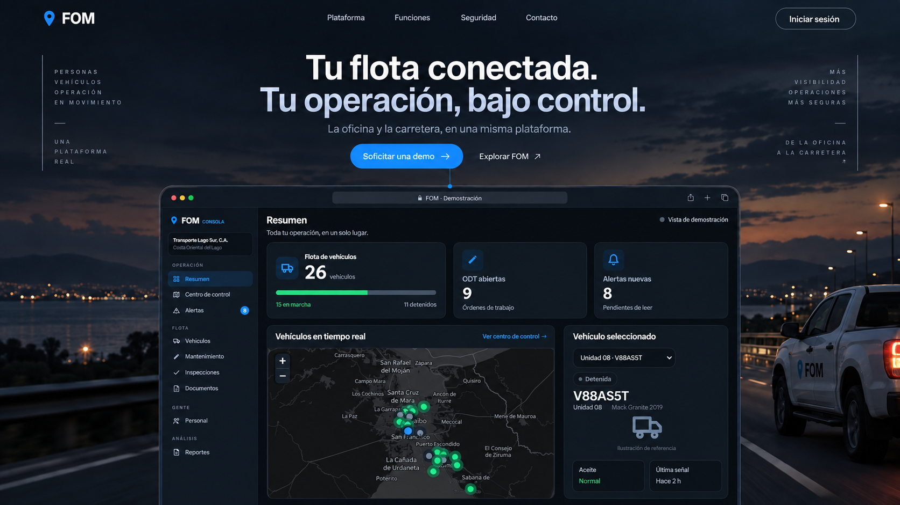
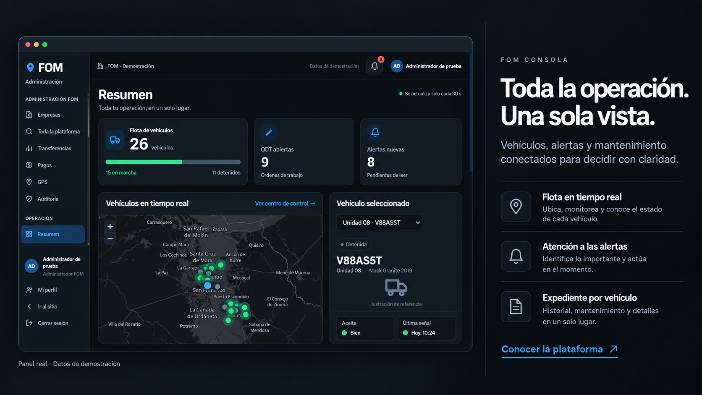
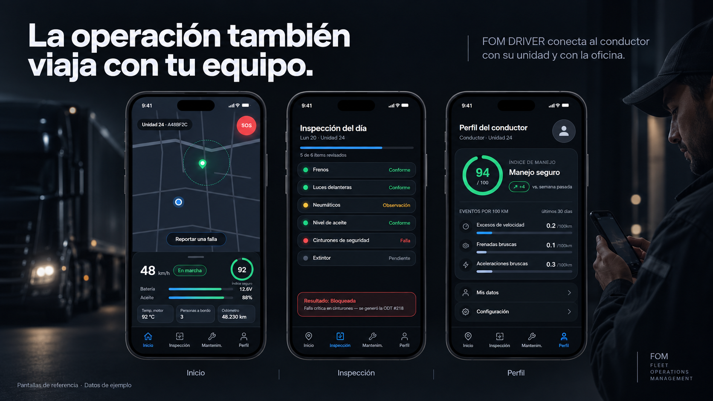
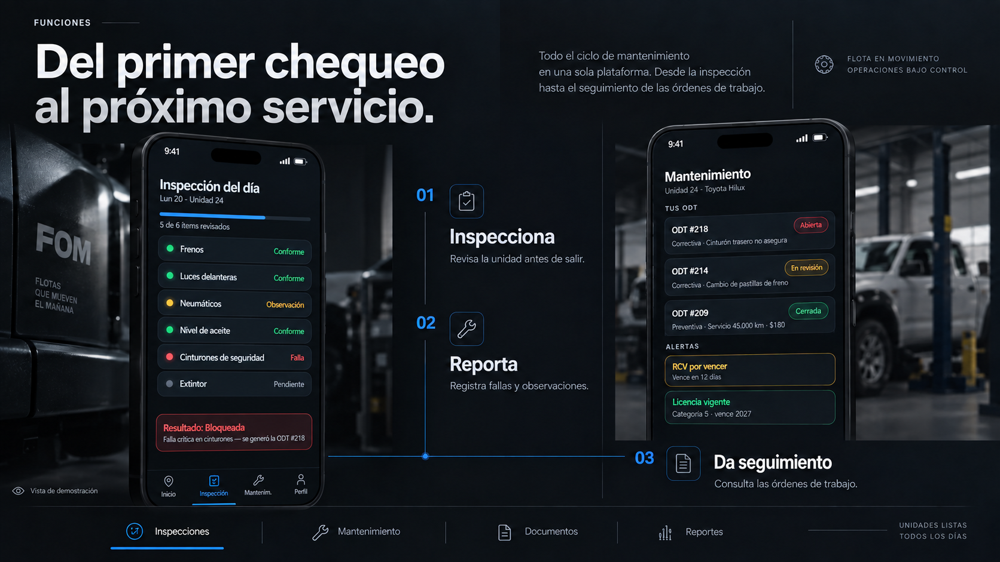
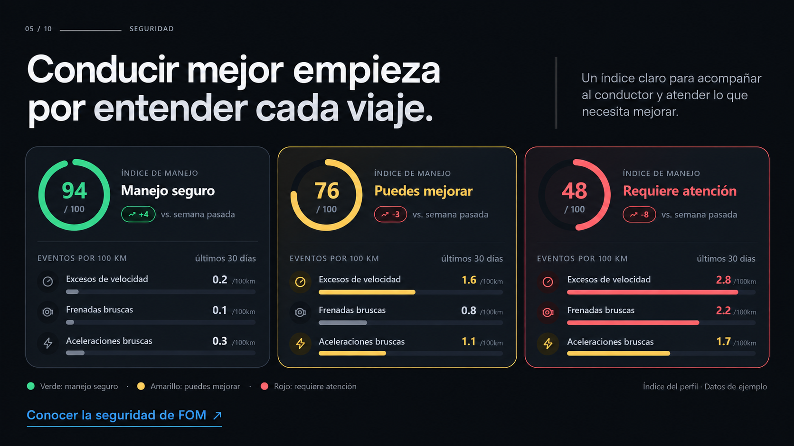
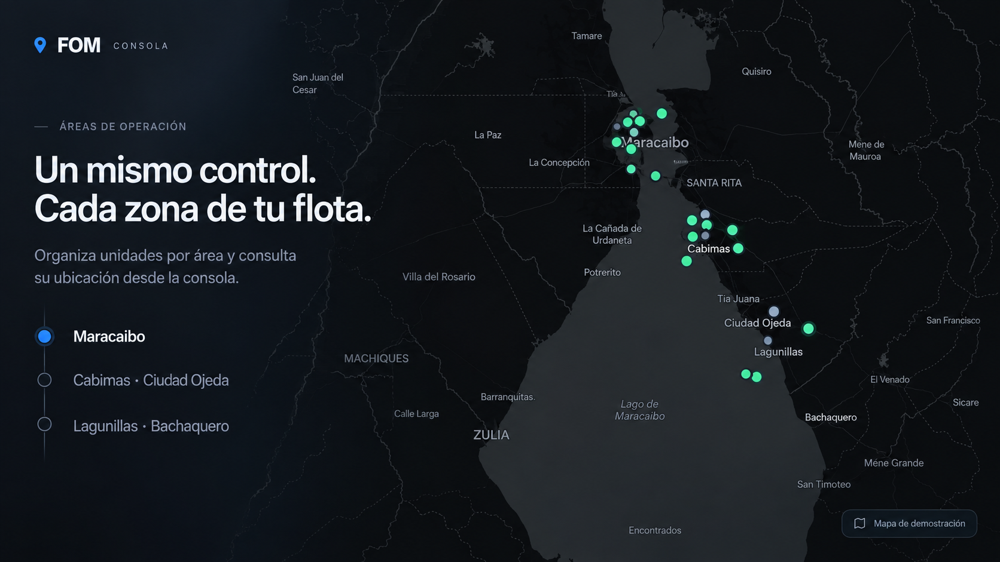
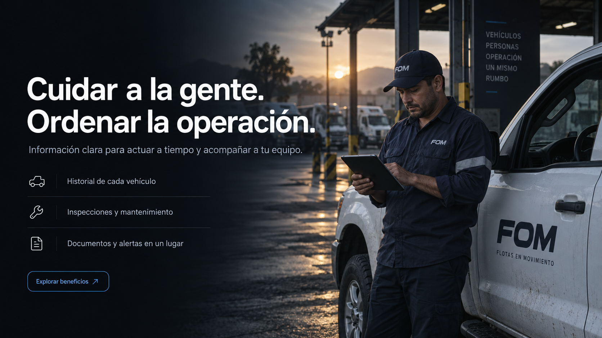
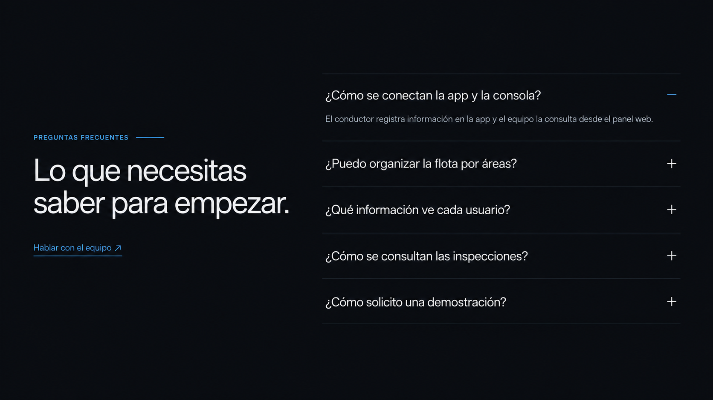
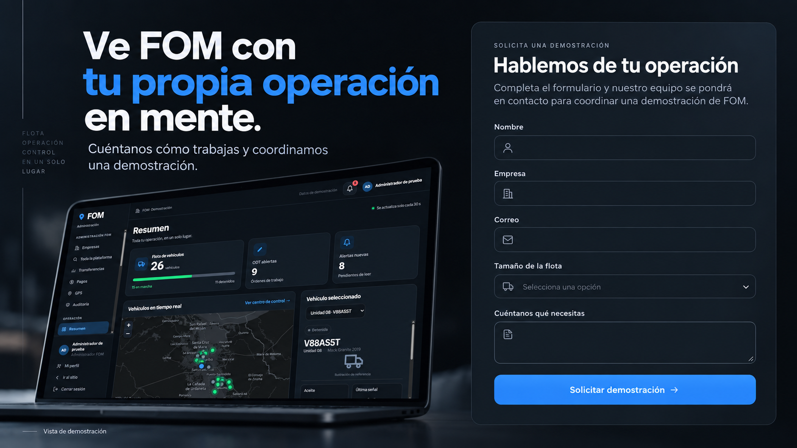
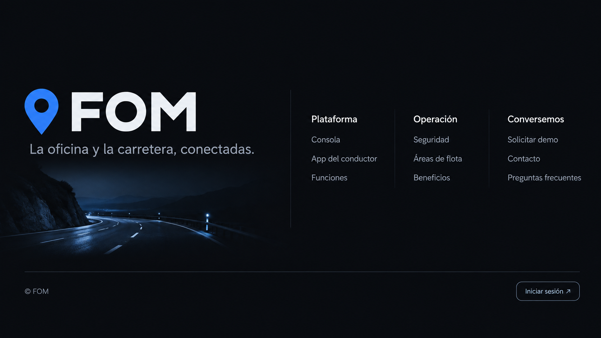

01 / 10Portada

Guardar imagen ↗02 / 10Dashboard

Guardar imagen ↗03 / 10App del conductor

Guardar imagen ↗04 / 10Funciones

Guardar imagen ↗05 / 10Seguridad e índice de manejo

Guardar imagen ↗06 / 10Áreas de operación

Guardar imagen ↗07 / 10Beneficios

Guardar imagen ↗08 / 10Preguntas frecuentes

Guardar imagen ↗09 / 10Contacto y demostración

Guardar imagen ↗10 / 10Pie de página

Guardar imagen ↗Propuestas visuales para revisión. La web publicada no se ha modificado en este trabajo.